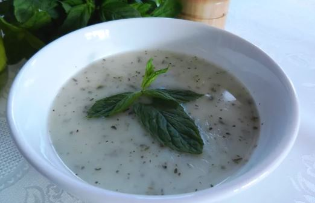

Recipe for turkish Highlanders soup
Ingredients:
- 1/2 cup rice or broken rice, or substitute with 1 cup cooked plain rice
- 4 cups water, divided
- 1 large egg yolk
- 2 cups plain yogurt
- 2 tablespoons all-purpose flour
- 1 teaspoon kosher salt
- Dash white pepper, or to taste
- 2 tablespoons butter, or margarine
- 2 tablespoons dried mint
- 1 teaspoon hot red pepper flakes, optional
- 2 fresh mint sprigs, for garnish
Instructions:
- Gather the ingredients.
First, put rice in a covered saucepan with 3 cups of water and bring to a boil. Reduce heat, cover, and cook rice until it softens.
In a separate bowl, beat egg, plain yogurt, flour, and 1 cup of water briskly with a wire whisk until well blended and creamy. Make sure you have no lumps of flour or yogurt.
Using your wire whisk, stir rice-water mixture and add yogurt-water mixture while gently whisking. Then, add salt and white pepper. Allow mixture to heat through until steaming. Continue whisking gently without letting the soup come to a boil. If soup becomes too thick for your liking, add a little more water.
In a separate pan, melt butter and add dried mint. Stir thoroughly and remove from heat quickly. Add butter and mint to soup and continue whisking until well combined. Garnish each bowl of soup with a sprig of fresh mint leaves.
If desired, you can also keep the butter and mint separate and drizzle it over the top of the soup just before serving. If you want to spice up your soup a little more, optionally add about 1 teaspoon hot red pepper flakes to the butter along with the mint.
Enjoy your delicious soup!
